배우기 전에 먼저 해 보세요. 틀려도 괜찮아요.
친구가 아프다고 해요. 뭐라고 말해 줄까요?
Gute Besserung은 아픈 사람에게 빨리 나으라고 하는 인사예요.
'여기서 담배를 피우시면 안 돼요'는 어떻게 말할까요?
nicht dürfen은 '~하면 안 된다', nicht müssen은 '~하지 않아도 된다'예요.
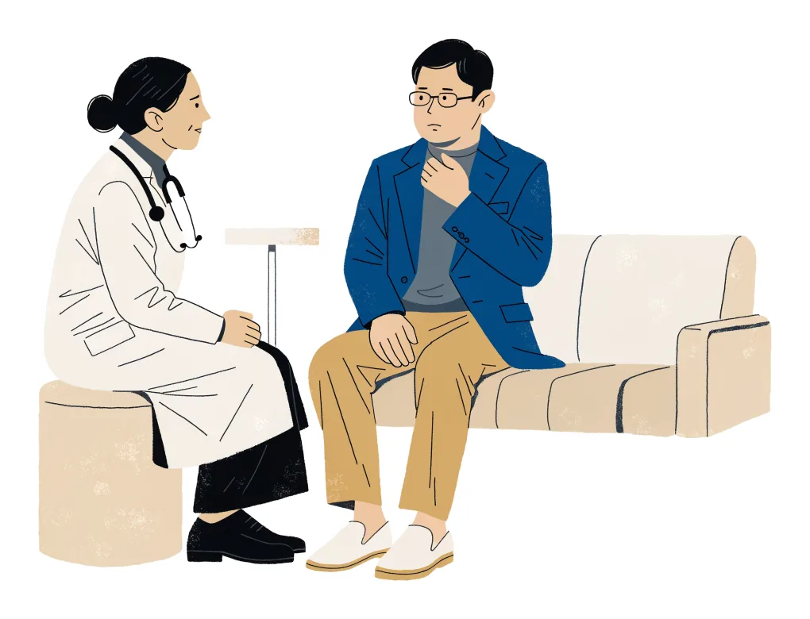
몸이 아프면 독일어가 더 급해져요. 어디가 아픈지 말하고, 의사의 말을 알아듣고, 학교나 회사에 알려야 해요. Jiu는 감기에 걸려 Lena의 조언을 듣고, Dohyun은 병원에 가고, Sora는 약국에서 딸의 약을 사요.
문법 sollen, dürfen, Imperativ (du, ihr), Possessivartikel im Akkusativ
과제대학아파서 수업에 못 간다고 메일 쓰기
과제직장아파서 출근하지 못한다고 회사에 알리기
이 과를 마치면 아픈 곳과 증상을 말하고, 의사와 약사의 조언을 이해하고, 아파서 못 간다고 알릴 수 있어요.
이 과에서 쓸 말이에요. 눌러서 먼저 들어 보세요.
배우기 전에 먼저 해 보세요. 틀려도 괜찮아요.
친구가 아프다고 해요. 뭐라고 말해 줄까요?
Gute Besserung은 아픈 사람에게 빨리 나으라고 하는 인사예요.
'여기서 담배를 피우시면 안 돼요'는 어떻게 말할까요?
nicht dürfen은 '~하면 안 된다', nicht müssen은 '~하지 않아도 된다'예요.
Lektion 2의 낱말 다섯 개를 다시 떠올려 보세요.
아침, WG 부엌이에요. Jiu의 얼굴이 좋지 않아요. Lena가 걱정해요.
들으면서 찾아보세요. Jiu는 오늘 무엇을 하기로 하나요?
며칠 뒤 오전이에요. Dohyun도 감기에 걸렸어요. Dr. Neumann의 진료실이에요.
들으면서 찾아보세요. Dohyun은 언제까지 일하면 안 되나요?
오후, 동네 약국이에요. Sora의 딸 Hana가 기침을 해요. Sora가 약을 사러 왔어요.
들으면서 찾아보세요. Hana는 약을 하루에 몇 번 먹어야 하나요?
세 대화를 듣고 답하세요.
Jiu는 어디가 아픈가요?
Jiu geht heute zum Kurs.
Lena가 집에 있으라고 했고, Jiu는 병원에 전화하기로 했어요.
Lena는 Jiu에게 무엇을 하라고 하나요?
Dohyun은 언제부터 아팠나요?
Dohyun darf morgen arbeiten.
금요일까지 일하면 안 돼요.
Dohyun은 알약을 하루에 몇 번 먹어야 하나요?
Hana는 어디가 아픈가요?
Hana darf die Tabletten nehmen.
어린이는 그 알약을 먹으면 안 돼요. 기침 시럽을 먹어요.
낱말 43개예요. 낱말이나 예문 앞의 단추를 누르면 소리가 나요. 명사는 der, die, das를 색으로 구분했어요.
der Kopf, die Köpfe 머리
Mein Kopf tut weh.머리가 아파요.
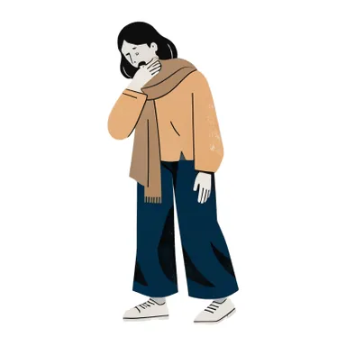
der Hals, die Hälse 목
Der Hals ist rot.목이 빨개요.
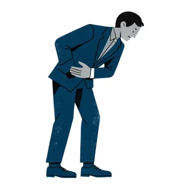
der Bauch, die Bäuche 배
Mein Bauch tut weh.배가 아파요.
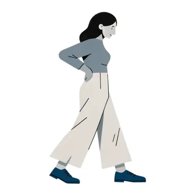
der Rücken, die Rücken 등, 허리
Mein Rücken tut weh.허리가 아파요.
der Arm, die Arme 팔
Der Arm tut weh.팔이 아파요.
die Hand, die Hände 손
Meine Hände sind kalt.손이 차가워요.
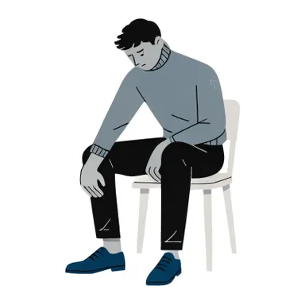
das Bein, die Beine 다리
Meine Beine tun weh.다리가 아파요.
der Fuß, die Füße 발
Mein Fuß tut weh.발이 아파요.
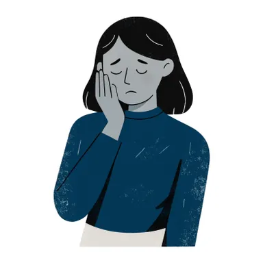
der Zahn, die Zähne 이
Ich habe Zahnschmerzen.이가 아파요.
das Auge, die Augen 눈
Meine Augen sind müde.눈이 피곤해요.
das Ohr, die Ohren 귀
Mein Ohr tut weh.귀가 아파요.
die Nase, die Nasen 코
Die Nase ist rot.코가 빨개요.
der Mund, die Münder 입
Machen Sie bitte den Mund auf.입을 벌려 보세요.
krank 아픈
Ich bin leider krank.아쉽게도 몸이 아파요.
gesund 건강한
Hana ist jetzt gesund.Hana는 이제 다 나았어요.
müde 피곤한
Ich bin sehr müde.아주 피곤해요.
die Schmerzen (Pl.) 통증
Seit wann haben Sie die Schmerzen?언제부터 아프셨어요?
die Kopfschmerzen (Pl.) 두통
Ich habe Kopfschmerzen.머리가 아파요.
die Halsschmerzen (Pl.) 목 아픔
Ich habe Halsschmerzen.목이 아파요.
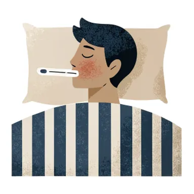
das Fieber 열
Hast du Fieber?열이 있어요?
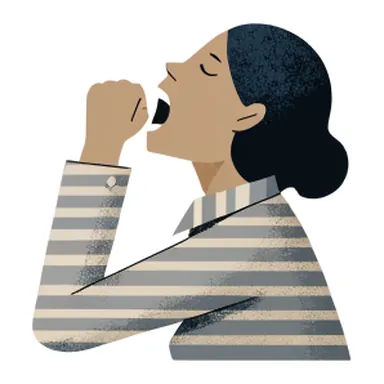
der Husten 기침
Meine Tochter hat Husten.딸이 기침을 해요.
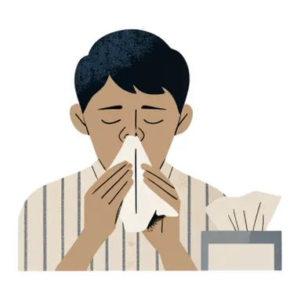
der Schnupfen 콧물감기
Ich habe Schnupfen.콧물이 나요.
die Erkältung, die Erkältungen 감기
Sie haben eine Erkältung.감기예요.
wehtun 아프다
Mein Hals tut weh.목이 아파요.
das Medikament, die Medikamente 약
Brauche ich Medikamente?약이 필요한가요?
die Tablette, die Tabletten 알약
Ich nehme eine Tablette.알약을 한 알 먹어요.
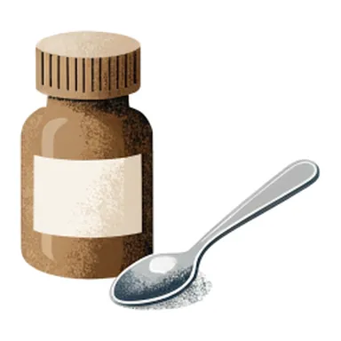
der Hustensaft 기침 시럽
Der Hustensaft ist gut für Kinder.그 기침 시럽은 아이들에게 좋아요.
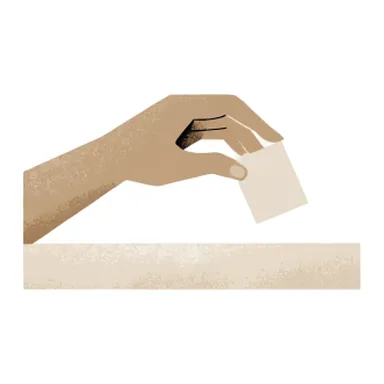
das Rezept, die Rezepte 처방전
Hier ist Ihr Rezept.여기 처방전이에요.
das Krankenhaus, die Krankenhäuser (큰) 병원
Das Krankenhaus ist in der Nähe.병원이 근처에 있어요.
die Krankmeldung, die Krankmeldungen 아파서 못 간다는 알림
Ich schreibe heute eine Krankmeldung.오늘 병가 알림 메일을 써요.
sollen (du sollst, er soll) ~하라고 하다 (남이 시킨 일)
Ich soll im Bett bleiben.침대에 누워 있으래요.
dürfen (du darfst, er darf) ~해도 된다
Darf ich morgen arbeiten?내일 일해도 되나요?
aussehen (du siehst aus, er sieht aus) ~해 보이다
Du siehst nicht gut aus.얼굴이 안 좋아 보여요.
aufmachen 열다, 벌리다
Kannst du bitte das Fenster aufmachen?창문 좀 열어 줄 수 있어요?
rauchen 담배를 피우다
Hier dürfen Sie nicht rauchen.여기서 담배를 피우시면 안 돼요.
holen 가져오다, 사 오다
Ich hole die Medikamente in der Apotheke.약국에서 약을 사 와요.
dreimal am Tag 하루에 세 번
Nehmen Sie die Tabletten dreimal am Tag.알약을 하루에 세 번 드세요.
seit ~부터 (지금까지)
Seit wann sind Sie krank?언제부터 아프셨어요?
gestern 어제
Seit gestern habe ich Fieber.어제부터 열이 나요.
schlecht 나쁜, 나쁘게
Ich schlafe schlecht.잠을 잘 못 자요.
Was fehlt Ihnen? 어디가 불편하세요?
Guten Tag, Frau Kim. Was fehlt Ihnen?안녕하세요, Frau Kim. 어디가 불편하세요?
Wie geht es Ihnen? 몸은 어떠세요, 어떻게 지내세요?
Wie geht es Ihnen? – Nicht so gut.몸은 어떠세요? – 별로 좋지 않아요.
Gute Besserung! 빨리 나으세요
Gute Besserung, Herr Park!빨리 나으세요, Herr Park!
이 과의 낱말로 여덟 문제를 풀어요.
줄을 누르면 소리가 나요. 아픈 곳은 두 가지로 말해요. 아픈 곳 뒤에 tut weh를 붙이거나, 몸의 이름에 -schmerzen을 붙여 Ich habe …라고 해요. 아픈 곳이 둘이면 tun weh가 돼요.
규칙
sollen은 의사나 선생님처럼 다른 사람이 하라고 한 일을 전할 때 써요. dürfen은 해도 되는 일, nicht dürfen은 하면 안 되는 일을 말해요. 앞 단계에서 배운 können, müssen, wollen처럼 ich와 er, sie의 모양이 같고, 동사 원형은 문장 끝에 와요.
| sollen | dürfen | |
|---|---|---|
| ich | soll | darf |
| du | sollst | darfst |
| er, sie | soll | darf |
| wir | sollen | dürfen |
| ihr | sollt | dürft |
| sie, Sie | sollen | dürfen |
주의 nicht müssen과 nicht dürfen은 뜻이 전혀 달라요. Sie müssen nicht kommen.은 '오지 않아도 된다', Sie dürfen nicht kommen.은 '오면 안 된다'예요. Soll ich …?는 '제가 …할까요?' 하고 도와주겠다고 묻는 말이에요. Soll ich Frau Hoffmann anrufen?
규칙을 보고 바로 확인해 보세요.
'~하면 안 된다'는 어떻게 말하나요?
규칙
du에게 하는 말은 du 모양에서 -st와 du를 빼고 써요. du kommst → Komm! ihr에게 하는 말은 ihr 모양에서 ihr만 빼요. ihr kommt → Kommt! 분리동사는 앞부분이 끝으로 가요.
| 원형 | du | ihr | Sie |
|---|---|---|---|
| kommen | Komm! | Kommt! | Kommen Sie! |
| trinken | Trink! | Trinkt! | Trinken Sie! |
| nehmen | Nimm! | Nehmt! | Nehmen Sie! |
| schlafen | Schlaf! | Schlaft! | Schlafen Sie! |
| anrufen | Ruf an! | Ruft an! | Rufen Sie an! |
| sein | Sei ruhig! | Seid ruhig! | Seien Sie ruhig! |
주의 e가 i로 바뀌는 동사는 du에게 말할 때도 바뀌어요. Nimm! Iss! Sprich! 그러나 a가 ä로 바뀌는 동사는 바뀌지 않아요. du schläfst이지만 Schlaf!, du fährst이지만 Fahr!라고 해요. 어간이 -t로 끝나면 끝에 -e를 붙여요. Warte! Arbeite nicht so viel!
규칙을 보고 바로 확인해 보세요.
du에게 '와요!'라고 말할 때 알맞은 것은 무엇인가요?
규칙
mein, dein, sein, ihr, unser, Ihr는 ein과 똑같이 바뀌어요. 목적어 자리(Akkusativ)에서 남성 명사 앞에서만 -en이 붙고, 중성과 여성, 복수는 주어 자리와 같아요. unser는 '우리의'라는 뜻이에요.
| 남성 | 중성 | 여성, 복수 | |
|---|---|---|---|
| ich | meinen Arzt | mein Rezept | meine Tabletten |
| du | deinen Arzt | dein Rezept | deine Tabletten |
| er | seinen Arzt | sein Rezept | seine Tabletten |
| sie | ihren Arzt | ihr Rezept | ihre Tabletten |
| wir | unseren Arzt | unser Rezept | unsere Tabletten |
| Sie | Ihren Arzt | Ihr Rezept | Ihre Tabletten |
주의 앞 단계에서 배운 ein → einen과 같은 규칙이에요. Ich habe einen Termin. Ich habe meinen Termin. sein 뒤에서는 바뀌지 않아요. Das ist mein Arzt. '너희의'는 euer이고, 끝에 -e가 붙으면 eure가 돼요.
규칙을 보고 바로 확인해 보세요.
목적어 자리에서 mein Arzt는 어떻게 바뀌나요?
듣고 알맞은 것을 고르세요.
Jiu는 어디가 아픈가요?
Ich habe Fieber und mein Kopf tut weh.
무엇을 하면 안 되나요?
Sie dürfen eine Woche keinen Sport machen.
Markus의 딸은 어디가 아픈가요?
Meine Tochter ist krank. Sie hat Bauchschmerzen.
Frau Becker는 수강생들에게 무엇을 부탁하나요?
Viele Leute sind krank. Bleibt bitte zu Hause und kommt nicht krank zum Kurs!
Dohyun이 Markus에게 전화해요. 듣고 알맞은 것을 고르세요.
Ich bin krank
Dohyun Hallo Markus, hier ist Dohyun. Ich bin krank. Ich kann heute nicht kommen.
Markus Oh nein! Was hast du?
Dohyun Eine Erkältung. Die Ärztin sagt, ich soll im Bett bleiben. Ich darf bis Freitag nicht arbeiten.
Markus Kein Problem. Soll ich Frau Hoffmann informieren?
Dohyun Ja, bitte. Und kannst du meinen Termin am Donnerstag absagen?
Markus Klar, ich rufe deinen Kunden an. Gute Besserung!
Dohyun은 왜 전화했나요?
Dohyun은 언제까지 일하면 안 되나요?
Markus는 무엇을 해 주나요?
Jiu가 Frau Becker에게 쓴 메일을 읽고, 맞으면 richtig, 틀리면 falsch를 고르세요. Betreff는 메일 제목이에요.
E-Mail an Frau Becker
Liebe Frau Becker,
ich bin leider krank. Ich habe Fieber und Halsschmerzen. Heute kann ich nicht zum Kurs kommen.
Ich gehe heute zum Arzt. Kann ich den Test nächste Woche schreiben?
Viele Grüße
Jiu Kim
Jiu hat Fieber.
Jiu kommt heute zum Kurs.
오늘은 수업에 갈 수 없다고 썼어요.
Jiu geht heute zum Arzt.
Jiu möchte den Test morgen schreiben.
다음 주에 시험을 볼 수 있는지 물었어요.
Die E-Mail ist für Frau Becker.
sollen과 dürfen의 알맞은 형태를 고르세요.
Ich viel Tee trinken.
ich heute arbeiten?
Kinder die Tabletten nicht nehmen.
Du im Bett bleiben.
Hier Sie nicht rauchen.
Hana den Hustensaft dreimal am Tag nehmen.
한국어 뜻에 맞는 말을 고르세요.
Im Krankenhaus Sie nicht rauchen.
병원에서는 담배를 피우시면 안 돼요.
Morgen ist Sonntag. Du nicht früh aufstehen.
내일은 일요일이에요. 일찍 일어나지 않아도 돼요.
Die Ärztin sagt, ich viel schlafen.
의사 선생님이 푹 자래요.
Du hast Fieber. Du heute nicht arbeiten.
열이 있어요. 오늘은 일하면 안 돼요.
ich Frau Hoffmann anrufen? – Ja, bitte.
제가 Frau Hoffmann에게 전화할까요? – 네, 부탁해요.
du에게 하는 말이에요. 알맞은 형태를 고르세요.
heute zu Hause!
viel Wasser!
die Tabletten!
viel!
bitte die Praxis an!
zum Arzt!
ihr에게 하는 말이에요. 빈칸에 알맞은 형태를 쓰세요.
kommen → bitte pünktlich!
trinken → viel Wasser!
schlafen → gut!
bleiben → gesund!
알맞은 말을 고르세요.
Ich rufe Arzt an.
Hast du Versichertenkarte?
Hana nimmt Hustensaft.
Dohyun sagt Termin ab.
Bringen Sie bitte Rezept mit.
Wir besuchen Ärztin.
낱말을 순서대로 눌러 문장을 만드세요.
침대에 누워 있어야 해요.
내일 일해도 되나요?
여기서 담배를 피우시면 안 돼요.
목이 아파요.
알약을 하루에 세 번 먹어요!
알맞은 관사를 고르세요.
Kopf
Hand
Bein
Bauch
Nase
Auge
Rücken
Ohr
어울리는 말끼리 짝지으세요.
듣고 그대로 써 보세요.
Ich habe Kopfschmerzen. 머리가 아파요.
Bleib heute zu Hause! 오늘은 집에 있어요!
Sie dürfen nicht arbeiten. 일하시면 안 돼요.
Wie geht es Ihnen? / Wie geht es dir? 몸은 어떠세요? / 몸은 어때요?
Was fehlt Ihnen? 어디가 불편하세요?
Was ist los? 무슨 일이에요?
Seit wann? 언제부터요?
Mir geht es nicht gut. 몸이 좋지 않아요.
Ich habe Kopfschmerzen / Fieber / Husten. 머리가 아파요 / 열이 나요 / 기침이 나요.
Mein Hals tut weh. 목이 아파요.
Seit gestern. / Seit drei Tagen. 어제부터요. / 사흘 전부터요.
Bleib zu Hause! / Bleiben Sie zu Hause! 집에 있어요! / 집에 계세요!
Trink viel Tee! 차를 많이 마셔요!
Geh zum Arzt! 병원에 가요!
Gute Besserung! 빨리 나으세요!
Die Ärztin sagt, ich soll im Bett bleiben. 의사 선생님이 침대에 누워 있으래요.
Ich darf bis Freitag nicht arbeiten. 금요일까지 일하면 안 돼요.
Ich bin leider krank. 아쉽게도 몸이 아파요.
Ich kann heute nicht kommen. 오늘은 갈 수 없어요.
Ich bin bis Freitag krankgeschrieben. 금요일까지 병가예요.
Haben Sie etwas gegen Husten? 기침에 듣는 약이 있나요?
Wie oft soll ich das nehmen? 얼마나 자주 먹어야 하나요?
Dreimal am Tag. 하루에 세 번이요.
과제 고르기
역할 대화와 말하기, 쓰기 과제는 대학 생활과 직장 생활 두 가지예요. 하나를 고르면 다음 과에서도 그쪽 과제가 나와요. 언제든 바꿀 수 있어요.
대화 A에서 역할을 하나 고르세요. 상대의 말은 음성으로 나오고, 내 차례에는 직접 말해요.
대화 B에서 역할을 하나 고르세요. 상대의 말은 음성으로 나오고, 내 차례에는 직접 말해요.
몸이 아팠던 날을 떠올리고 칸을 채우세요. 아픈 곳은 Kopf, Hals, Bauch, Rücken에서, 증상은 Fieber, Husten, Schnupfen에서 골라요. 의사가 하라는 일은 동사 원형으로 써요. 완성된 문장을 소리 내어 읽어 보세요.
Mein Hals tut weh.
Ich habe auch Husten.
Seit gestern bin ich krank.
Ich soll viel Tee trinken.
아침에 일어났더니 열이 나고 목이 아파요. 오늘은 수업에 갈 수 없어요. 오늘 병원에 갈 생각이에요.
오늘 내야 하는 숙제(Hausaufgabe)는 내일 보내고 싶어요.
같이 사는 Lena가 내 얼굴을 보고 걱정해요. Lena의 말을 듣고 쪽지를 보며 답하세요. 예시 답은 참고만 하세요.
Du siehst nicht gut aus. Was ist los? 얼굴이 안 좋아 보여요. 무슨 일이에요?
Mir geht es nicht gut. Ich habe Fieber und mein Hals tut weh.
Oh nein! Seit wann? 저런! 언제부터요?
Seit gestern Abend.
Gehst du heute zum Kurs? 오늘 수업에 가요?
Nein, ich bleibe zu Hause. Ich schreibe Frau Becker eine E-Mail.
Gut. Soll ich einen Tee machen? 잘 생각했어요. 차를 끓일까요?
Ja, gern. Vielen Dank!
Und geh bitte zum Arzt! 그리고 병원에 꼭 가요!
Ja, ich rufe jetzt die Praxis an.
Eine E-Mail an Frau Becker
아파서 수업에 못 간다고 Frau Becker에게 메일을 써 보세요. 읽기와 연습 순서에 나온 Jiu의 메일을 참고해도 좋아요. 다섯 문장이면 충분해요.
Liebe Frau Becker, ich bin leider krank. Ich habe Fieber und mein Hals tut weh. Heute kann ich nicht zum Kurs kommen. Ich gehe heute zum Arzt. Kann ich die Hausaufgabe morgen schicken? Viele Grüße, Minji Choi
다 쓴 뒤에 확인해 보세요.
아침에 일어났더니 열이 나고 기침이 심해요. 일찍 병원에 다녀왔어요. 의사가 수요일까지 일하지 말고 쉬라고 했어요.
팀장 Frau Hoffmann에게 전화해서 알려요. 오늘 14시에 고객과 약속이 있는데 갈 수 없어요.
팀장 Frau Hoffmann에게 전화해서 아파서 출근하지 못한다고 알려요. 쪽지를 보고 답하세요. 팀장의 말을 듣고 소리 내어 답한 뒤 예시 답과 비교해 보세요.
Kessler Technik, Hoffmann, guten Morgen! Kessler Technik의 Hoffmann입니다, 좋은 아침이에요!
Guten Morgen, Frau Hoffmann. Hier ist Minji Choi. Ich bin leider krank und kann heute nicht kommen.
Oh, das tut mir leid. Was fehlt Ihnen? 저런, 안됐네요. 어디가 안 좋으세요?
Ich habe Fieber und Husten.
Und was sagt der Arzt? 의사는 뭐라고 해요?
Der Arzt sagt, ich soll im Bett bleiben. Ich bin bis Mittwoch krankgeschrieben.
Gut. Sie haben heute um 14 Uhr einen Termin mit einem Kunden. 알겠어요. 오늘 14시에 고객과 약속이 있죠.
Ja, das stimmt. Kann Markus meinen Termin absagen?
Natürlich. Bleiben Sie im Bett. Gute Besserung! 물론이죠. 푹 쉬세요. 빨리 나으세요!
Vielen Dank, Frau Hoffmann! Auf Wiederhören!
Eine Krankmeldung
아파서 출근하지 못한다고 팀장 Frau Hoffmann에게 메일을 써 보세요. 다섯 문장이면 충분해요.
Guten Morgen, Frau Hoffmann, ich bin leider krank. Ich habe Fieber und Husten und kann heute nicht kommen. Die Ärztin sagt, ich soll im Bett bleiben. Ich bin bis Mittwoch krankgeschrieben. Kann Markus meinen Termin am Donnerstag absagen? Viele Grüße, Minji Choi
다 쓴 뒤에 확인해 보세요.
Ich kann sagen, was mir wehtut.어디가 아픈지 말할 수 있어요.
Ich kann beim Arzt meine Beschwerden beschreiben.병원에서 증상을 설명할 수 있어요.
Ich kann Ratschläge verstehen und geben.조언을 알아듣고 해 줄 수 있어요.
Ich kann mich krankmelden.아파서 못 간다고 알릴 수 있어요.